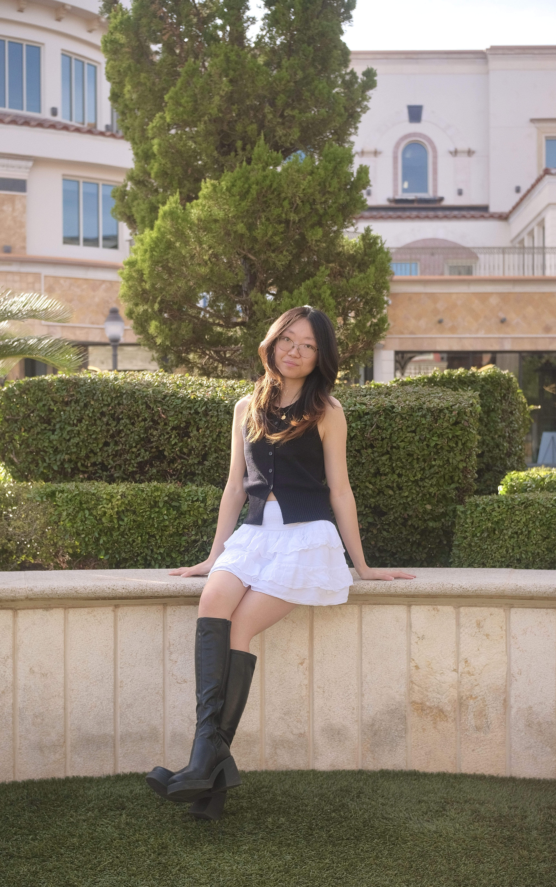

I’m a graphic design student exploring UI/UX and branding, and I like creating work that feels clean, thoughtful, and a little expressive. I’ve spent some time working with restaurants—designing menus, creating content, and helping shape their visual identity through social media, photography, and editing—which is where I really started to understand how design works in real, everyday settings.
Outside of design, I spend a lot of time cooking (or trying new recipes and hoping they turn out well). I also love puzzles and anything that feels a little challenging—lately that’s been learning how to play badminton, which is still a work in progress.
Recently, I’ve been interested in UI/UX and how design translates into digital products, especially in tech and startup spaces. I’m still figuring things out as I go, but I enjoy learning, experimenting, and building work that feels more intentional each time.
View My Work